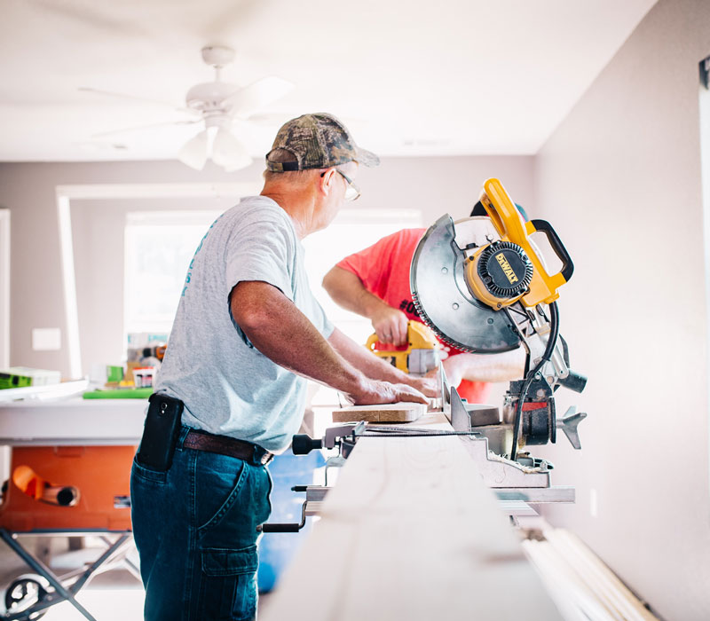
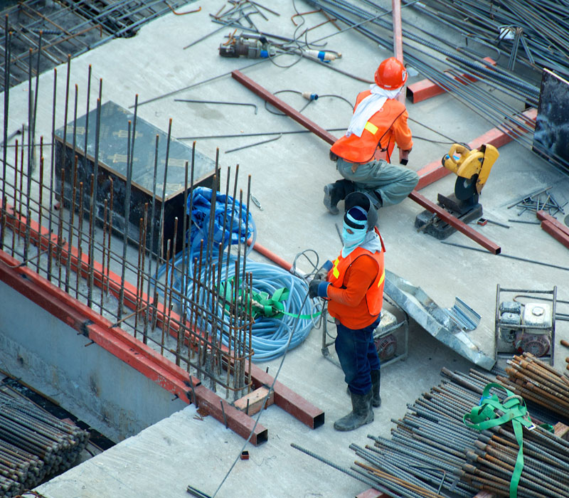
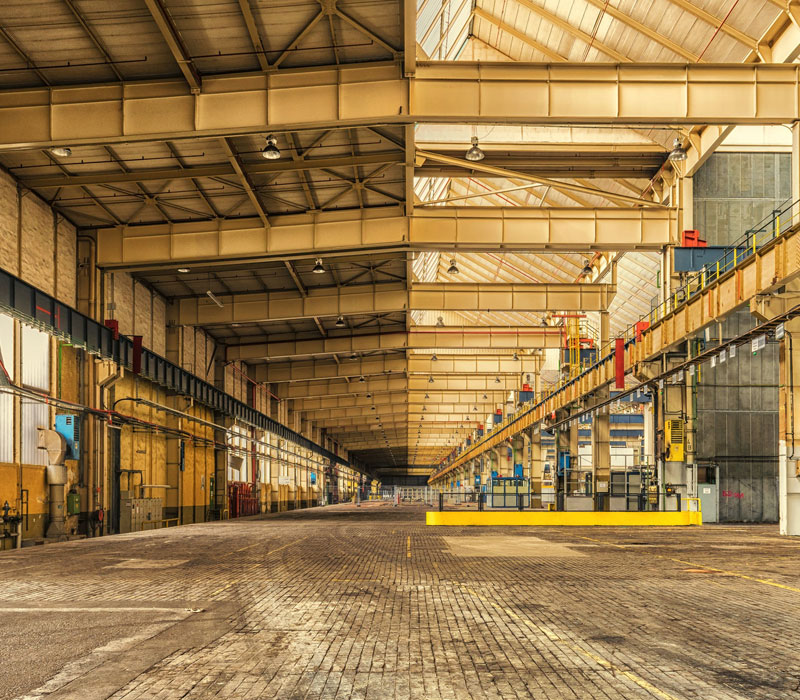
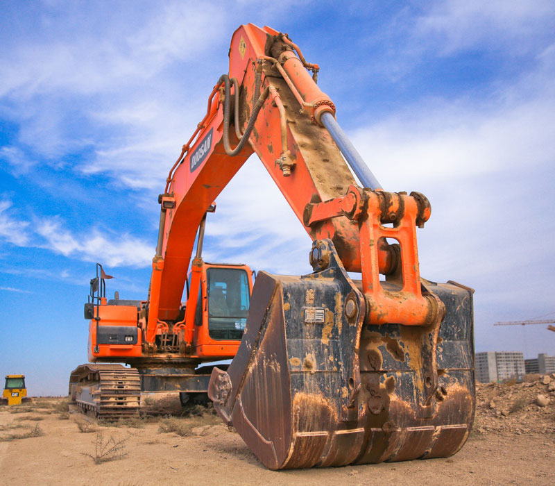

01
Residential Construction
Complete house construction for plot owners, families and premium residential projects.
Explore detailsExplore one clear services hub covering construction, structural work, renovation, interior woodwork, plumbing, metalwork, paint, maintenance and finishing.
Explore ServicesDiscuss Your ProjectEach card below shows what the service is for. Select Explore details to jump to the detailed section on this same page. This keeps the website simple for visitors while giving search engines and AI systems enough context to understand each service.
Complete house construction for plot owners, families and premium residential projects.
Explore detailsConstruction support for offices, commercial buildings and investment properties.
Explore details
Foundations, RCC, masonry and structural works planned around drawings and site requirements.
Explore details
A coordinated construction-to-finishing solution for clients who want one project workflow.
Explore details
Upgrade existing spaces through planned renovation, remodeling and finishing work.
Explore details
Media walls, wall panelling, ceilings, doors, cabinets and custom interior woodwork.
Explore details
Planned water-supply, drainage and plumbing installation for new builds and renovations.
Explore details
Metal fabrication and blacksmith solutions for gates, railings, grills and structural details.
Explore detailsInterior and exterior painting, surface preparation and finishing systems.
Explore details
Practical maintenance support for keeping residential and commercial properties functional.
Explore details
Construction block solutions and material support for building requirements.
Explore detailsFlooring, ceilings, paint and finishing details that complete the property.
Explore detailsHouse construction for plot owners, families and premium residential projects.
A residential project should be planned around drawings, covered area, specifications, budget and the client’s priorities. SMA Builders can structure the work so the homeowner understands what is included, what depends on selections, and how the project progresses from one stage to the next.
Construction support for offices, commercial buildings and investment properties.
Commercial construction needs tighter coordination because multiple trades, timelines and operational requirements often overlap. The scope should be clearly defined before work begins so the owner can compare costs and make decisions with fewer surprises.
The structural stage of a building, from foundation through masonry and roof slab.
Grey structure generally refers to the main structural and masonry stage before final architectural finishing. Exact inclusions vary by contract, so the drawings, BOQ and written scope should always be checked before work starts.
A coordinated route from construction through building services and finishing.
Turnkey construction is designed for clients who want the project coordinated through multiple stages instead of managing separate trades themselves. The exact scope should be documented in a BOQ or contract so responsibilities are clear.
Modernize, repair or reconfigure an existing home, office or property.
Renovation and remodeling can range from updating finishes to changing layouts and services. Existing-condition checks are important because concealed plumbing, electrical work and structural limitations may affect the final scope.
Custom woodwork for functional storage and modern interior features.
Woodwork can dramatically change the appearance of an interior. For media walls, wall panelling and ceilings, the design should consider dimensions, electrical points, lighting, material selection, ventilation and the way the finished surface will be maintained.
Water-supply, drainage and plumbing installation for construction and renovation projects.
Good plumbing planning is mostly about getting the concealed work right before walls and finishes close. Pipe routing, access points, slope, pressure and coordination with electrical and structural work should be considered early.
Metal fabrication for gates, railings, grills, frames and other building details.
Blacksmith work combines fabrication with accurate site measurements and finishing. The final design should account for dimensions, fixing points, movement, corrosion protection and the intended appearance.
Interior and exterior painting with proper preparation and finishing.
A good paint finish starts before the paint is applied. Surface preparation, moisture conditions, repairs, primer selection and the number of finish coats all affect the final appearance and durability.
Ongoing practical maintenance for residential and commercial properties.
Maintenance is about dealing with small issues before they become larger and more expensive problems. A practical maintenance plan can cover recurring checks, repairs and finishing touch-ups according to the property’s condition.
Construction block production and material support for building requirements.
Block quality can influence masonry work, plastering and the overall consistency of a construction project. The correct block type and specification should be selected according to the project requirements rather than treating every block as interchangeable.
The finishing stage that brings together the appearance, comfort and function of a property.
Finishing is where many visible decisions come together. Materials, colours, lighting, joinery, paint and exterior treatments should be coordinated so the final result looks intentional rather than like separate trades working independently.
Tell us about the property, its current condition, your intended scope and your target outcome. We can help you understand which combination of services fits the project.